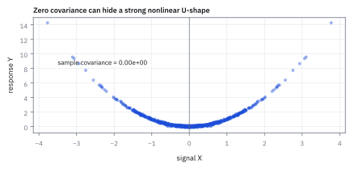
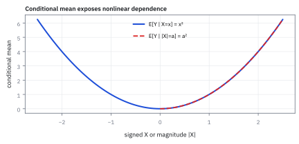
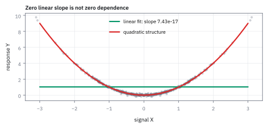

6.9 Zero Covariance ≠ Independence
เมื่อค่าความสัมพันธ์เชิงเส้นเป็นศูนย์ แต่ตัวแปรยังผูกพันกันอย่างแนบแน่น
หักพวงมาลัยซ้ายสุดหรือขวาสุด ยางส่งเสียงดังเท่ากัน แต่ถ้าคิดความสัมพันธ์แบบเส้นตรง ผลบวกกับลบอาจหักล้างจนได้ศูนย์ คุณเชื่อไหมว่าสองอย่างไม่เกี่ยวกัน?
เฉลย: เครื่องคิดเลขไม่ได้ตาบอด มันมองหาเส้นตรง; ความสัมพันธ์ทรงตัว U จึงแอบผ่านประตูตรวจได้เหมือนคนยืนกลางกระดานแล้วอ้างว่าไม่เลือกข้าง
Zero covariance ไม่เท่ากับ independence: covariance วัดการขยับร่วมแบบเส้นตรง ส่วน independence บอกว่า distribution หนึ่งไม่เปลี่ยนเมื่อรู้อีกตัว ใช้แยกสองข้ออ้างที่หน้าตาคล้ายกันแต่แรงไม่เท่ากัน
ศัพท์ที่ใช้ในหัวข้อนี้
- zero covariance
- zero covariance คือภาวะที่ covariance ระหว่างสองตัวแปรเท่ากับศูนย์ ใช้บอกว่าไม่มีความสัมพันธ์เชิงเส้น แต่ไม่ตัดความสัมพันธ์รูปแบบอื่น
- independence
- independence คือการรู้ค่าตัวแปรหนึ่งแล้วไม่ให้เบาะแสถึงอีกตัว ใช้รับรองว่า joint distribution แยกเป็นผลคูณของ distribution เดี่ยวได้
- nonlinear dependence
- ความสัมพันธ์แบบไม่เป็นเส้นตรง เช่น รูปตัวยู ที่ค่าของตัวแปรหนึ่งขึ้นอยู่กับขนาด (magnitude) ของอีกตัวแปรหนึ่ง ทำให้เครื่องมือวัดเชิงเส้นตรวจไม่พบ
- U-shape
- รูปทรงความสัมพันธ์ที่ตัวแปรตอบสนองต่อขนาดของการแกว่งตัวโดยไม่สนใจทิศทางเครื่องหมาย ใช้เป็นตัวอย่างคลาสสิกที่หักล้างความเชื่อเรื่อง covariance
- quality assurance (QA)
- กระบวนการตรวจสอบคุณภาพและความถูกต้องของแบบจำลอง เพื่อดักจับความเสี่ยงและความสัมพันธ์ที่มาตรวัดทั่วไปมองไม่เห็น
- convexity
- ความโค้งของความสัมพันธ์ ไม่ใช่ความชัน ใช้บอกว่าผลลัพธ์เร่งขึ้นหรือชะลอลง เมื่อตัวแปรขยับไกลจากจุดอ้างอิง และเป็นเหตุผลที่ค่าเฉลี่ยของผลลัพธ์ ไม่เท่ากับผลลัพธ์ของค่าเฉลี่ย
สัญลักษณ์ที่ใช้ในหัวข้อนี้
| สัญลักษณ์ | ความหมาย | หน่วย |
|---|---|---|
| $X$ | สัญญาณตลาดที่มี distribution แบบปกติมาตรฐาน | unitless |
| $Y$ | ผลตอบรับที่มีความสัมพันธ์แบบไม่เป็นเส้นตรงกับ $X$ | unitless |
| $\operatorname{Cov}(X,Y)$ | ค่า covariance เชิงเส้นระหว่างตัวแปรทั้งสอง | unitless² |
| $\rho_{X,Y}$ | correlation coefficient เชิงเส้น | -1 ถึง 1 |
| $\varepsilon$ | สัญญาณรบกวนสุ่มที่ค่าเฉลี่ยเป็นศูนย์และเป็นอิสระจาก $X$ | unitless |
| $W$ | ตัวแปรสลับเครื่องหมายแบบทวิภาค มีค่าเป็น -1 หรือ 1 ด้วยโอกาสเท่ากัน | unitless |
| $\boldsymbol\Sigma$ | covariance matrix ของ random variables สองมิติ | unitless |
ที่มาที่ไป: ตัวอย่างค้านที่ทุกคนควรเห็นสักครั้ง
หัวข้อนี้มีเป้าหมายเดียวคือหักล้างความเชื่อที่แพร่หลายที่สุดเรื่องหนึ่งในงานความเสี่ยง คือความเชื่อว่าถ้าตัวเลขความสัมพันธ์เป็นศูนย์ แปลว่าสองสิ่งไม่เกี่ยวกัน
ความเชื่อนี้อันตรายเพราะมันนำไปสู่การเอาความเสี่ยงมาบวกกันตรง ๆ และสรุปว่าพอร์ตกระจายความเสี่ยงดีแล้ว
วิธีหักล้างที่ตรงที่สุดคือยกตัวอย่างเดียวที่ตัวเลขเป็นศูนย์เป๊ะ ๆ แต่รู้ตัวหนึ่งแล้วรู้อีกตัวทันที แบบไม่เหลือความไม่แน่นอนเลย ซึ่งเป็นการผูกพันที่แน่นที่สุดเท่าที่เป็นไปได้
กรณีนี้ไม่ใช่เรื่องสมมติในตำรา พอร์ตที่มี option อยู่ด้วยมีความสัมพันธ์แบบโค้งกับราคาหุ้นเสมอ และตัวเลขความสัมพันธ์เชิงเส้นมองไม่เห็นมันเลย
ประวัติศาสตร์และที่มา: ภาพลวงตาของ Galton และ Pearson สู่ความเสี่ยง nonlinear
ราว ๆ ปี 1888 Francis Galton ได้คิดค้นแนวคิดเรื่องความสัมพันธ์ระหว่างตัวแปร และต่อมาในปี 1896 Karl Pearson ได้พัฒนาสูตรคำนวณ correlation coefficient ซึ่งกลายเป็นเครื่องมือวัดความเกี่ยวพันที่แพร่หลายที่สุดในโลก แต่ทั้ง Galton และ Pearson ทำงานภายใต้สมมติฐาน normal distribution เป็นหลัก ซึ่งในโลกของ normal distribution นั้น zero covariance มีความหมายเทียบเท่ากับ independence จริง ๆ
ข้อเท็จจริงนี้ทำให้เกิดความเข้าใจผิดตกทอดมาหลายทศวรรษ ผู้คนเริ่มทึกทักว่าเมื่อคำนวณ covariance หรือ correlation ได้ศูนย์ แปลว่าตัวแปรสองตัวไม่มีความเกี่ยวข้องกัน จนกระทั่งนักคณิตศาสตร์ในทศวรรษ 1920 และ 1930 เช่น Maurice Fréchet ได้ชี้ให้เห็นตัวอย่างค้านมากมายที่ตัวแปรมีความสัมพันธ์กันแบบตายตัว เช่น $Y = X^2$ แต่ correlation กลับเป็นศูนย์เป๊ะ
ในตลาดการเงินยุคใหม่ ความเข้าใจผิดนี้สร้างความเสียหายมหาศาล ตัวอย่างเช่น กลยุทธ์ option แบบ delta-neutral ถูกออกแบบให้มี covariance กับหุ้นอ้างอิงใกล้ศูนย์ แต่มีความเสี่ยงความผันผวนจากconvexityสูงสุด การพึ่งพาเพียงตัวเลข correlation จึงเปรียบเสมือนการขับรถโดยมองเพียงเส้นตรง แต่มองไม่เห็นโค้งหักศอกที่รออยู่ข้างหน้า
คำถามที่เรากำลังตอบ: ทำไม covariance เป็นศูนย์ถึงยังซ่อนความเสี่ยงได้?
ให้ $X$ เป็นสัญญาณตลาดที่มีค่าเฉลี่ยเป็นศูนย์และสมมาตร และให้ $Y$ เป็นผลตอบรับที่ขึ้นกับขนาดของการแกว่งตัว เช่น $Y = X^2$ หากเราพึ่งพาเพียง covariance หรือ correlation ในการวัดความสัมพันธ์ เราจะได้ค่าเป็นศูนย์เสมอเพราะฝั่งซ้ายและขวาหักล้างกันจนหมด แต่ในความเป็นจริง distribution ของตัวแปรตามจะเปลี่ยนแปลงไปอย่างสิ้นเชิงเมื่อเรารู้ขนาดของสัญญาณ
ขั้นที่ 1 — ห้าจุดด้วยมือ: covariance ศูนย์เป๊ะ แต่รู้ตัวหนึ่งแล้วรู้อีกตัวทันที
ก่อนใช้ระฆังคว่ำ ลองกับห้าจุดที่นับนิ้วได้ ผลลัพธ์เดียวกันเป๊ะ
ผลคูณ $X\cdot Y=X^3$ ให้ $-8,-1,0,1,8$ ซึ่งหักล้างกันพอดีเพราะสมมาตร covariance จึงเป็นศูนย์แบบไม่มีเศษ ไม่ใช่เกือบศูนย์
แต่ถ้ารู้ว่า $X=2$ เรารู้ทันทีว่า $Y=4$ โอกาสเป็น 1 ขณะที่ถ้าไม่รู้ $X$ โอกาสที่ $Y=4$ มีแค่ 2 ใน 5 ข่าวส่งถึงกันเต็มที่ นี่คือนิยามของ ‘ไม่อิสระ’ จากหัวข้อ 6.4
ขั้นที่ 2 — ตัวอย่างค้านคลาสสิก (canonical counterexample)
หัวข้อนี้มีเป้าหมายเดียว คือหักล้างความเชื่อที่ว่า correlation เป็นศูนย์แปลว่าไม่เกี่ยวกัน วิธีที่ดีที่สุดคือยกตัวอย่างค้านหนึ่งตัวอย่าง
กำหนดให้ $X$ มี distribution แบบ standard Normal และให้ $Y$ เป็นกำลังสองของ $X$ ความสัมพันธ์ระหว่างทั้งสองตัวแปรจึงเป็นรูปตัวยู (U-shape) ที่สมมาตรรอบแกนตั้งอย่างสมบูรณ์
ขั้นที่ 3 — พิสูจน์ว่า covariance มีค่าเป็นศูนย์พอดี
คำนวณให้เห็นว่าเป็นศูนย์จริง ๆ ไม่ใช่เกือบศูนย์
เนื่องจาก $X$ มี distribution ที่สมมาตรรอบศูนย์ โมเมนต์คี่ $E[X^3]$ และค่าเฉลี่ย $E[X]$ จึงเป็นศูนย์ทั้งคู่ ทำให้ค่า covariance ออกมาเท่ากับศูนย์เป๊ะ แม้ว่า $Y$ จะถูกกำหนดจาก $X$ ทั้งหมดก็ตาม
ขั้นที่ 4 — พิสูจน์ว่า independence ล้มเหลวโดยสิ้นเชิง
แต่รู้ตัวหนึ่งแล้วรู้อีกตัวทันทีแบบไม่มีความไม่แน่นอนเหลือเลย ซึ่งเป็นการผูกพันที่แน่นที่สุดเท่าที่จะเป็นไปได้
ของที่โจทย์ให้: $X=0.5$ และ $Y=X^2$. ยกกำลังสองได้ $Y=0.25$ จึงทำให้ $P(Y\le1\mid X=0.5)=1$. แต่ probability แบบไม่รู้ $X$ เท่ากับ $2\Phi(1)-1\approx0.6827$; สองค่านี้ไม่เท่ากันจึงไม่ independent.
ขั้นที่ 5 — เมื่อเพิ่มสัญญาณรบกวนในโลกความเป็นจริง
ในข้อมูลจริงที่มี noise ปน ความสัมพันธ์แบบนี้จะซ่อนตัวได้ดีมาก และเครื่องมือที่ดูแค่ correlation จะมองไม่เห็นเลย
แม้จะเติมสัญญาณรบกวนสุ่ม $\varepsilon$ ที่เป็นอิสระและมีค่าเฉลี่ยศูนย์เข้าไป ความสัมพันธ์แบบไม่เป็นเส้นตรงระหว่าง $X$ กับ $Y$ ก็ยังคงอยู่ และค่า covariance ก็ยังคงมีแนวโน้มเป็นศูนย์เช่นเดิม
ขั้นที่ 6 — ข้อยกเว้นเดียว: ทำไม Joint Normal จึงคืนชีพให้กฎนี้
ข้อยกเว้นเพียงหนึ่งเดียวที่ covariance เท่ากับศูนย์จะรับประกันindependence (independence) คือเมื่อ random variables ทั้งคู่มี joint Normal distribution ร่วมกัน โครงสร้างทางพีชคณิตของ density ระฆังคว่ำจะตัดพจน์เชื่อมโยงข้ามตัวแปรออกจนหมด ทำให้ joint density แยกตัวเป็นผลคูณของ density เดี่ยวสองตัวได้พอดี
ถ้า zero covariance ไม่ได้แปลว่าอิสระเสมอไป ทำไมทุกคนถึงยังจำสับสน คำตอบคือมันเป็นจริงในกรณีเดียว: เมื่อตัวแปรทั้งสองมี joint Normal distribution ร่วมกัน
เมื่อ covariance เป็นศูนย์ matrix ผกผัน $\boldsymbol\Sigma^{-1}$ จะกลายเป็น diagonal matrix ทำให้พจน์ไขว้ในเลขชี้กำลังของ function ระฆังคว่ำหายไปทั้งหมด
เลขชี้กำลังที่ไม่มีพจน์ไขว้แยกออกเป็นผลบวกสองก้อน ซึ่งทำให้ $e^{A+B}$ แตกตัวเป็น $e^A e^B$ และส่งผลให้ joint density แยกเป็นผลคูณของ density เดี่ยวสองก้อนพอดี
ขั้นที่ 7 — กับดักตัวแปรเดี่ยว: แต่ละตัวเป็น Normal ไม่ได้รับประกัน Joint Normal
แม้ตัวแปรทั้งสองจะมี marginal distribution เป็น Normal ทั้งคู่ และมี covariance เป็นศูนย์ แต่หากไม่ได้มี joint Normal distribution ร่วมกัน ตัวแปรทั้งสองอาจผูกพันกันอย่างสมบูรณ์แบบไม่เป็นเส้นตรง ดังเช่นกรณี $Y = W\,X$ ที่ขนาดกำลังสองของทั้งคู่เท่ากันเสมอ
ผู้อ่านมักถามต่อว่า ถ้า $X$ เป็น Normal และ $Y$ ก็เป็น Normal แล้ว covariance เป็นศูนย์ ทั้งสองจะอิสระต่อกันหรือไม่ คำตอบที่น่าตกใจคือยังไม่พอ
ให้ $W$ เป็นตัวสลับเครื่องหมายสุ่ม จะได้ว่า $Y$ มี distribution เป็น Normal มาตรฐานเป๊ะ และ covariance ระหว่าง $X$ กับ $Y$ เป็นศูนย์อย่างสมบูรณ์
แต่เมื่อดูขนาด จะพบว่า $Y^2$ เท่ากับ $X^2$ เสมอด้วยโอกาส 100% ทั้งสองจึงผูกติดกันอย่างแนบแน่น นี่คือเหตุผลที่ต้องระบุว่าต้องเป็น joint Normal ไม่ใช่แค่ marginal Normal
ขั้นที่ 8 — ขยายการพิสูจน์: ทำไม $E[X^3]$ ต้องเป็นศูนย์
การบอกว่าเป็นศูนย์เพราะสมมาตรเป็นคำตอบที่ถูก แต่ยังไม่ใช่คำอธิบาย บรรทัดข้างล่างเขียนเหตุผลนั้นออกมาเป็นสมการ
ตัวที่ถูกยกกำลังสามทำให้เครื่องหมายพลิก ส่วน Normal density สมมาตรจึงไม่พลิกตาม สองอย่างรวมกันแล้วได้functionคี่ ซึ่งพื้นที่สองฝั่งหักล้างกันเสมอ
เขียนค่าเฉลี่ยของ $X^3$ ออกมาเป็น integral ตามนิยาม แล้วดูที่ integrand เมื่อแทน $-x$ จะได้ค่าติดลบของเดิม เพราะ $(-x)^3=-x^3$ และ density ของ Normal สมมาตร
functionที่มีสมบัติดังกล่าวเรียกว่าfunctionคี่ พื้นที่ทางซ้ายของศูนย์จึงเป็นเงาสะท้อนของทางขวา บวกกันแล้วหายไปพอดี ไม่ใช่หักล้างแบบเกือบหมด
ห้าจุดในขั้นที่ 1 ให้คำตอบเดียวกัน: ยกกำลังสามแล้วได้ $-8,-1,0,1,8$ ซึ่งรวมกันเป็นศูนย์ ทั้งสองวิธีจึงยืนยันกันเอง
ทำไมต้องเขียนให้เห็น: ถ้า density ไม่สมมาตร ข้อสรุปนี้ใช้ไม่ได้ทันที และในตลาดจริง density ของผลตอบแทนเบ้จนสมมาตรไม่จริง ซึ่งเป็นเหตุผลว่าทำไม covariance จึงเป็นเครื่องมือที่ไม่พอ
ขั้นที่ 9 — ตัวเลขจริง: สมมติอิสระแล้วประเมินความเสี่ยงร่วมต่ำไปเท่าไร
หัวข้อนี้เตือนว่าห้ามคูณความน่าจะเป็นเมื่อ covariance เป็นศูนย์ ตัวเลขข้างล่างคือราคาของการไม่เชื่อคำเตือนนั้น
โจทย์ข้อนี้มีห้าจุดเท่านั้น จึงนับด้วยมือได้ว่าเหตุการณ์ร่วมเกิดขึ้นจริงบ่อยกว่าที่การสมมติอิสระบอกไว้เท่าไร
เหตุการณ์ฝั่งซ้ายคือ $X$ ต่ำกว่าหรือเท่ากับ $-1$ เกิดกับสองค่าในห้า คิดเป็น $0.40$ ส่วนเหตุการณ์ฝั่งขวาคือ $Y$ อย่างน้อย $4$ ก็เกิดกับสองค่าในห้าเท่ากัน
ถ้าคิดแบบอิสระก็คูณกันได้ $0.16$ แต่ของจริงมีเพียงกรณีเดียวที่เข้าเงื่อนไขทั้งสองพร้อมกันคือ $X=-2$ เพราะ $X=-1$ ให้ $Y=1$ ซึ่งไม่ถึงเกณฑ์ จึงได้ $0.20$
อัตราส่วนคือ $1.25$ แปลว่าการสมมติอิสระประเมินเหตุการณ์ร่วมต่ำไปหนึ่งในสี่ และตัวเลขนี้มาจากตัวอย่างห้าจุดธรรมดา ไม่ใช่กรณีสุดขั้วที่สร้างขึ้นมา
แปลว่าอะไร: ถ้าใช้ zero covariance เป็นใบอนุญาตให้คูณความน่าจะเป็น ตัวเลขความเสี่ยงร่วมในรายงาน จะต่ำกว่าความจริงทันที และความคลาดเคลื่อนนี้จะโตขึ้นเมื่อสนใจหางมากขึ้น
แล้วเอาไปใช้ทำอะไรได้จริงบ้าง
การรู้ว่าตัวเลขความสัมพันธ์เป็นศูนย์ยังไม่พอ ป้องกันความผิดพลาดที่มีราคาแพงมาก
ใช้ตรวจแบบจำลองความเสี่ยง เพราะการเห็นค่าเป็นศูนย์แล้วสรุปว่าไม่เกี่ยวกัน ทำให้ประเมินความเสี่ยงต่ำเกินจริงได้มาก
ใช้กับพอร์ตที่มี option เพราะกำไรขาดทุนของ option สัมพันธ์กับราคาหุ้นแบบโค้ง ซึ่งตัวเลข correlation มองไม่เห็นเลย
ใช้เลือกเครื่องมือวัดความสัมพันธ์ให้เหมาะกับข้อมูล แทนการใช้ตัวเดียวกับทุกอย่าง
Figure 6.9a — กราฟรูปตัวยูที่ covariance คำนวณได้ศูนย์

จุดข้อมูลเรียงตัวเป็นรูปตัวยูอย่างชัดเจน แต่ค่า sample covariance ออกมาเป็นศูนย์พอดี เพราะการเพิ่มขึ้นของ $Y$ ทางฝั่งซ้ายและขวาของแกน $X$ หักล้างกันหมดในการคำนวณเชิงเส้น
Figure 6.9b — conditional mean เผยโครงสร้างที่แท้จริง

เมื่อพล็อตกราฟค่าเฉลี่ย $E[Y\mid X=x] = x^2$ เส้นจะโค้งขึ้นอย่างเด่นชัด และเมื่อเขียนด้วยขนาด $|X|$ จะเห็นได้ชัดว่าข้อมูลของสัญญาณกำหนดพฤติกรรมของตัวแปรตามอย่างสมบูรณ์
Figure 6.9c — linear regression ไม่สามารถจับความสัมพันธ์แบบไม่เป็นเส้นตรงได้

เส้นตรงจากการทำ linear regression มีความชันเป็นศูนย์ราบเรียบราวกับไม่มีอะไรเกิดขึ้น ขณะที่เส้นพาราโบลาสีแดงสามารถจับโครงสร้างความเสี่ยงที่แท้จริงได้ทั้งหมด
Figure 6.9d — ค่าความเสี่ยงเฉลี่ยตามขนาดของการเหวี่ยงตัว

เมื่อแบ่งกลุ่มตามขนาดสัญญาณ $|X|$ ค่าเฉลี่ยของ $Y$ จะพุ่งขึ้นจาก 0.081 สู่ 0.925 และ 3.908 สะท้อนให้เห็นว่าความเสี่ยงที่ปลายหางขึ้นอยู่กับความผันผวน แม้ correlation จะเป็นศูนย์ก็ตาม
Worked Example — โจทย์จิ๋วที่คำนวณได้
โจทย์ให้อะไรมาบ้าง: X มี standard Normal distribution และ Y เท่ากับ X คูณตัวเอง. ต้องตรวจว่า covariance ศูนย์ทำให้ independent หรือไม่.
คำตอบ: symmetry ทำให้ covariance เป็น 0 แต่เมื่อ X เท่ากับ 0.5 เรารู้ว่า Y เท่ากับ 0.25 แน่นอน; conditional probability จึงเป็น 1 ต่างจาก 0.6827 ตอนยังไม่รู้ X.
ตรวจเองใน 10 วินาที: กด 0.5 คูณ 0.5 ต้องได้ 0.25 และเปิดตาราง standard Normal ที่ 1 จะได้พื้นที่กึ่งกลางประมาณ 0.6827.
แปลว่าอะไรบนโต๊ะ: correlation ศูนย์ตัดได้เฉพาะความสัมพันธ์เส้นตรง. กับดักคือใช้ correlation matrix ตัวเดียวตรวจกลยุทธ์ที่ payoff โค้ง.
ตัวอย่างที่สอง — คำตอบและวิธีเช็ก
คำตอบ: เหตุการณ์ร่วมของตัวอย่างห้าจุดมีโอกาสเกิดขึ้น $0.20$ ขณะที่การสมมติอิสระให้เพียง $0.16$ จึงต่ำไปหนึ่งในสี่
ตรวจเองใน 10 วินาที: นับกรณีที่เข้าเงื่อนไขทั้งสองพร้อมกันในห้าจุด ต้องได้หนึ่งกรณี แล้วเทียบกับผลคูณของสองความน่าจะเป็นขอบ
ใช้ตัดสินใจ: ถ้าแบบจำลองความเสี่ยงรายงานความน่าจะเป็นที่ขาดทุนพร้อมกัน ให้ถามว่าได้มาจากการคูณ หรือมาจากการนับเหตุการณ์ร่วมจริง เพราะตัวเลขที่ได้จะต่างกันทันทีที่ความสัมพันธ์ไม่เป็นเส้นตรง
กับดักที่พบบ่อย: นำ covariance เป็นศูนย์ไปใช้เป็นใบอนุญาตคูณความน่าจะเป็น
การจับความน่าจะเป็นของเหตุการณ์มาคูณกันจะทำได้ก็ต่อเมื่อพิสูจน์แล้วว่าตัวแปรเป็นอิสระต่อกันจริง ๆ (independence) ห้ามนำค่า covariance หรือ correlation ที่เป็นศูนย์มาใช้เป็นใบอนุญาตคูณความน่าจะเป็นเด็ดขาด เพราะกราฟรูปตัวยูเป็นหลักฐานชัดเจนว่า $Y$ ถูกล็อกไว้ด้วย $X$ อย่างสมบูรณ์แบบ
ข้อจำกัด: วิธีนี้สมมติอะไร และของจริงเป็นอย่างไร
| เรื่อง | วิธีนี้สมมติว่า | ของจริงเป็นอย่างไร | ผลที่ตามมาเวลาใช้งาน |
|---|---|---|---|
| สิ่งที่ตรวจได้ | มีวิธีตรวจความสัมพันธ์ทุกแบบ | ไม่มีวิธีเดียวที่จับได้ทุกแบบ | ต้องดูกราฟกระจายเสมอ ไม่ใช่ดูแค่ตัวเลขสรุป |
| จำนวนข้อมูล | มีข้อมูลพอจะเห็นรูปแบบ | ความสัมพันธ์แบบโค้งต้องใช้ข้อมูลมากกว่ามาก | รูปแบบที่มีจริงอาจมองไม่เห็นเลยด้วยข้อมูลไม่กี่ร้อยจุด |
| สัญญาณรบกวน | ข้อมูลสะอาดพอ | noise ในข้อมูลการเงินสูงมาก | ความสัมพันธ์ที่ชัดเจนในตัวอย่างสอน มักมองไม่เห็นในข้อมูลจริง |
หัวข้อนี้เป็นคำเตือน ไม่ใช่เครื่องมือ และคำเตือนนั้นคือห้ามสรุปจากตัวเลขเดียว
สรุปที่ใช้ได้จริง
- covariance หรือ correlation เป็นศูนย์บอกได้เพียงว่าไม่มีความสัมพันธ์เชิงเส้นตรงเท่านั้น
- ตัวแปรสามารถผูกพันกันอย่างสมบูรณ์แบบไม่เป็นเส้นตรง (เช่น $Y=X^2$) แม้ covariance จะมีค่าเป็นศูนย์เป๊ะ
- การตรวจสอบความสัมพันธ์ต้องใช้กราฟ scatter, conditional mean หรือการแบ่งกลุ่มตามขนาดความผันผวน (magnitude bucketing)
- ห้ามนำ zero covariance ไปอ้างเพื่อแยกคูณความน่าจะเป็นหรือตัดความเสี่ยงทิ้งเด็ดขาด
- ความสมมาตรที่ทำให้ covariance เป็นศูนย์คือการที่ integrand เป็นfunctionคี่ ถ้า density ไม่สมมาตร ข้อสรุปนี้ใช้ไม่ได้ทันที
- บนตัวอย่างห้าจุด การสมมติอิสระให้เหตุการณ์ร่วม 0.16 แต่ของจริงคือ 0.20 คือต่ำไปหนึ่งในสี่ และความคลาดเคลื่อนโตขึ้นเมื่อสนใจหาง